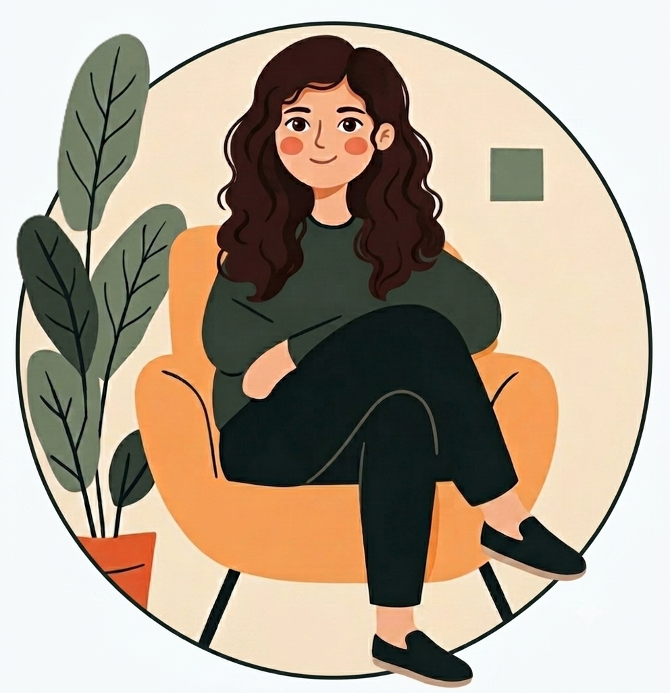

Conóceme
Mi historia, mi formación y mi forma de acompañarte

Formación
Sobre mí
Soy psicóloga general sanitaria, terapeuta EMDR y especialista en terapia de pareja y familia.
Desde los 12 años tuve claro que quería dedicarme a la psicología. Siempre me ha fascinado comprender cómo pensamos, sentimos y nos relacionamos con los demás. Recuerdo que en casa mi madre tenía libros y revistas de psicología que despertaban enormemente mi curiosidad. Me gustaba hojearlos y descubrir explicaciones sobre el comportamiento humano, las emociones y las relaciones. Aquellas primeras lecturas sembraron en mí un interés que, con el tiempo, se convirtió en una verdadera vocación.
Esa curiosidad por entender a las personas, unida a mi deseo de ayudar y escuchar, me llevó a elegir la psicología como camino profesional.
Hoy ejerzo mi profesión desde una mirada cercana, respetuosa y basada en la evidencia científica. Considero que cada persona tiene una historia única y merece un espacio seguro donde sentirse escuchada, comprendida y libre de juicios.
Mi objetivo es acompañarte para que puedas comprender mejor lo que te ocurre, desarrollar recursos personales y avanzar hacia una vida con mayor bienestar emocional y relaciones más satisfactorias.
Formación
Grado en Psicología
Universidad Pontificia de Salamanca
Máster Universitario en Psicología General Sanitaria
Universidad Pontificia de Salamanca
Máster en Terapia Familiar y de Pareja
Universidad de Salamanca
Especializaciones
Cursos y jornadas